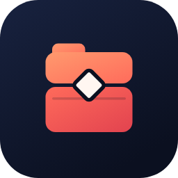

CoffreTout ranger au même endroit, par sujet.
Coffre regroupe dans un seul dossier tout ce qui concerne un sujet : les liens (reels Instagram ou Facebook, vidéos YouTube, articles), les notes, les messages vocaux, les photos, les vidéos, les documents, ainsi que des tâches avec alarme.
Dossiers par sujet. Crée des dossiers et des sous-dossiers, et retrouve tout avec la recherche.
Web et mobile. Ton compte est synchronisé entre le site et l’application Android / iPhone.
Partage depuis les autres applications. Depuis Instagram, Facebook ou YouTube : « Partager → Coffre ».
Sauvegarde dans ton Google Drive. Comme WhatsApp, tu peux sauvegarder tes données dans un dossier « Coffre » de ton propre Google Drive.
Google Drive
La sauvegarde utilise uniquement l’autorisation « drive.file » : Coffre n’a accès qu’aux fichiers qu’il a lui-même créés dans ton Drive, jamais au reste de ton contenu.